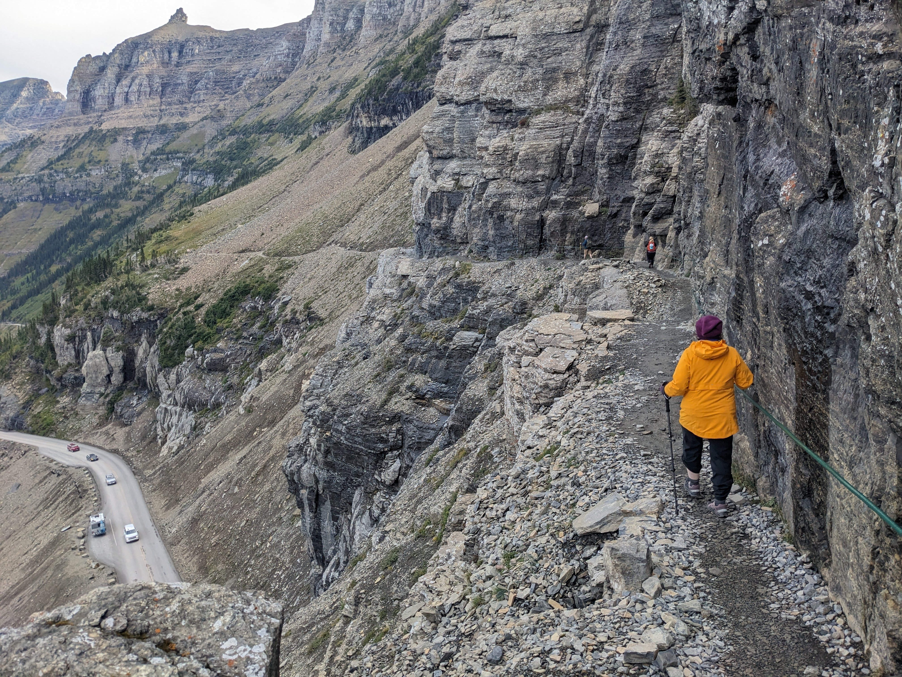
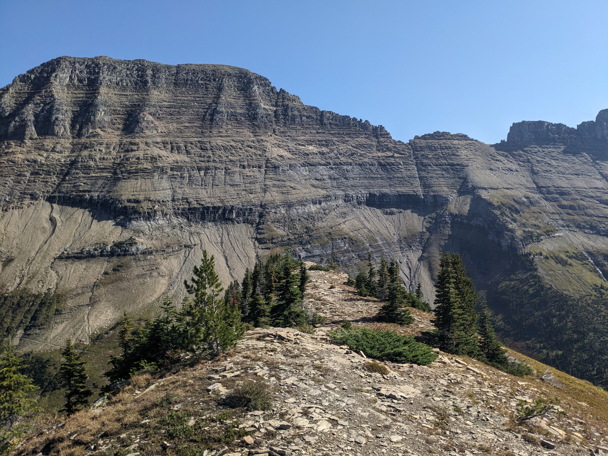
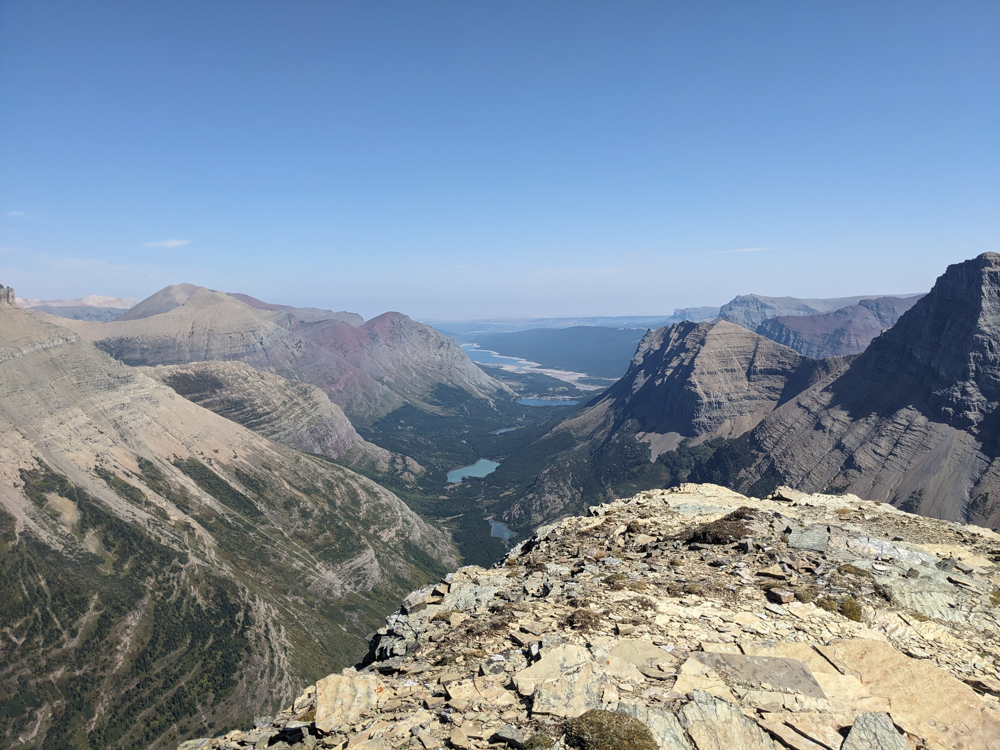
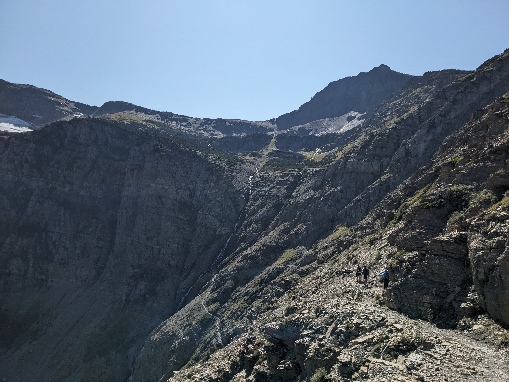

I was in Glacier National Park with my fiance's family and we were planning to take the Highline Trail from Logan Pass all the way down to Swiftcurrent Lodge. This is nominally a 14-mile trek, but is nearly all downhill, which was great for her parents, for which the distance was already significant. I was determined to get to the top of something on the trip, but the combination of foul weather and trail closures for bears had stymied me up until that point. It was going to be our last day, and so I planned for a few detours from the Highline Trail.

The Highline Trail contours above the road for the first mile or so, in an unlikely traverse with a thought-provoking drop on the left side. Eventually the trail turns uphill and works its way up to the Granite Park Chalet, which was a great chance to sit for a snack. Right as the trail starts to diverge from the road was my first objective: Haystack Butte. From the trail, Haystack Butte gains an additional 500 feet to its 7487 foot summit. It is a minor lump, separated from the towering 9551-foot Mount Gould by a narrow saddle through which the Highline Trail runs. Mara and I got a bit of a lead on the rest of the family and departed the trail, heading up towards Haystack Butte. We found relatively easy, but steep, terrain on the southern flank, topping out relatively quickly. We encountered a party near the top who asked us where they could find the trail down; apparently they had been wandering around the summit area for nearly an hour, looking for a passable route down. We pointed them in the direction we had come from, but let them know that we were not on any established trail.

On the way down, I gained a little appreciation for the other party's confusion. We tried to cut a somewhat more direct route back to the trail, and found the north and east sides to be considerably steeper, with many impassable sections. After a few false starts, we found a reasonable route back to the trail and jogged up to meet up with the family a bit before they reached the Chalet. From the Chalet, I embarked on my second side trip: Swiftcurrent Mountain. This is a 1200-foot climb off of the Continental Divide Trail and ends at a fire lookout with an incredible view down the Swiftcurrent Valley.

I hustled up the trail, passing many parties on the way. The trail is in good condition, but switches back relentlessly through a forest and then up a barren mountainside. I topped out, checked out the fire lookout, and turned to head back down. I caught up with the family 1.5 miles down the trail, just as they were starting the steep descent down into the valley. From above, the trail looks like it is running straight off a cliff, but somehow the necessary weaknesses and notches in the cliffband are there like magic, and with minimal apparent dynamiting. An equivalent trail along the John Muir Trail would have been completely blasted into the mountainside, but this section of the CDT has a beautiful elegance to it.

We encountered a moose shortly after getting back down into the forest, and then began the parade of lakes back to camp. The last several miles were a bit of a slog, but the surroundings were still pretty. I think everyone was just ready to be done hiking. We made it back to camp and enjoyed some huckleberry beers before going into town for a big dinner.